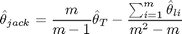

Contents
function [ mu, sigma, lambda ] = CalibrateORMaxLikelihoodJackknife(m, S, deltaT, T)
CalibrateORMaxLikelihoodJackknife
Reduces mean reversion parameter bias by partioning sample
Jackknife Function

function [j] = jackknife(m, thetaT, thetaLi) j = (m /(m-1)) * thetaT - sum(thetaLi)/(m^2 - m); end
Partition sample
partlength = floor(length(S)/m);
Spart = zeros(m,partlength);
for i=1:m
Spart(i,:) = S(partlength*(i-1)+1:partlength*i);
end
Calculate for entire partition.
[ muT, sigmaT, lambdaT ] = CalibrateORMaxLikelihood(S, deltaT, T);
Calculate the individual partitions.
mupart = zeros(m,1);
sigmapart = zeros(m,1);
lambdapart= zeros(m,1);
for i=1:m
[ mupart(i), sigmapart(i), lambdapart(i) ] = ...
CalibrateORMaxLikelihood(Spart(i,:), deltaT, T/m);
end
Now use the jacknife estimator adjustment.
lambda = jackknife(m, lambdaT, lambdapart);
mu = jackknife(m, muT, mupart);
sigma = jackknife(m, sigmaT, sigmapart);
end